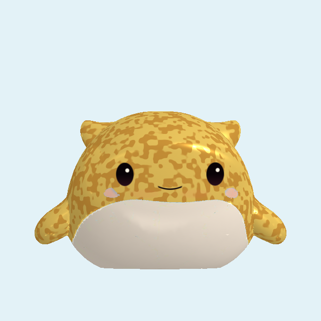
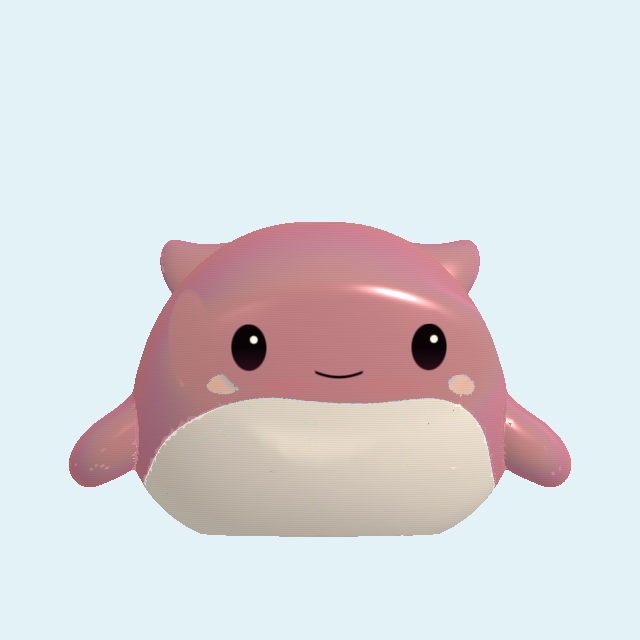
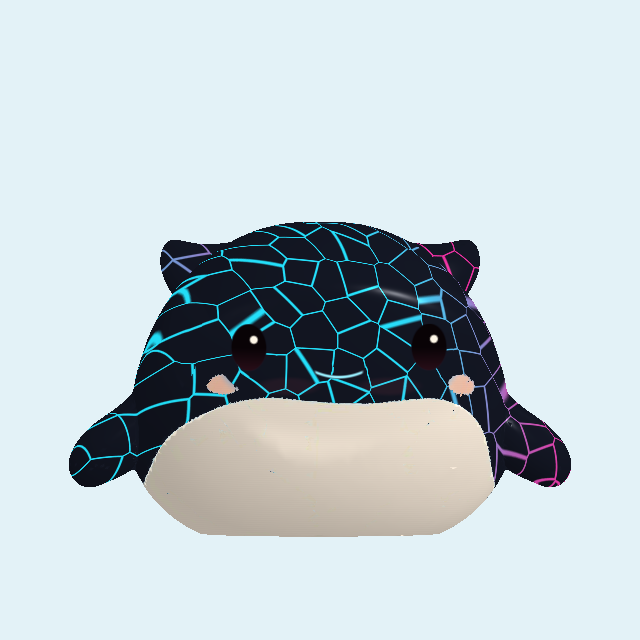
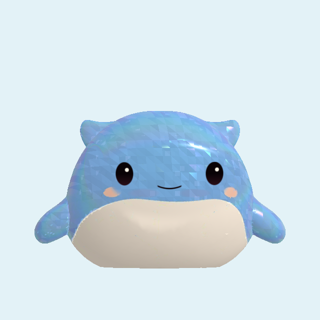
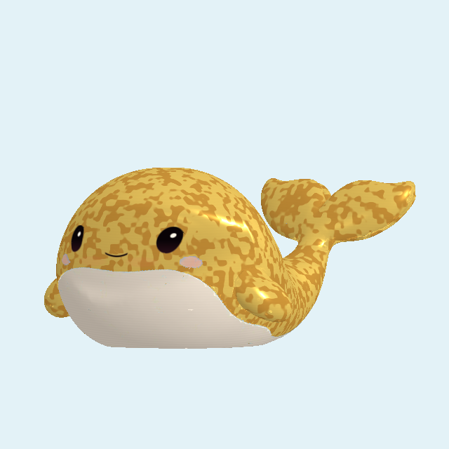
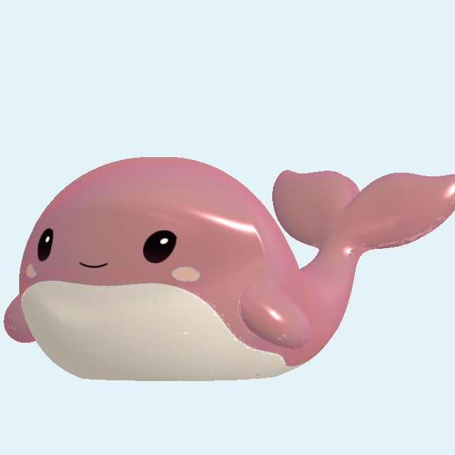
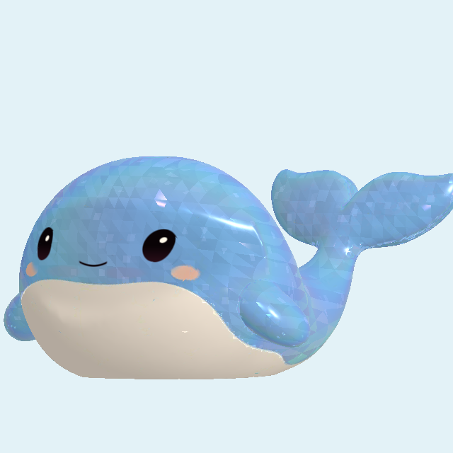
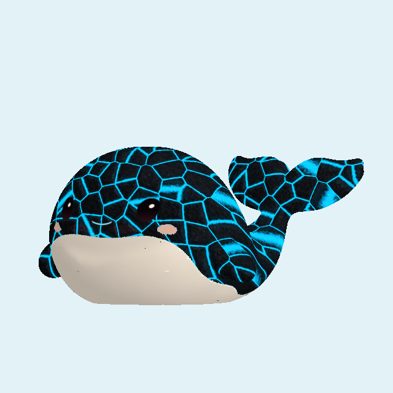

Owner-approved materials · October 22 · revision 3
Wally · fifteen little ocean treasures
All 15 finishes approved. Material approval recorded October 22. Draw odds remain a separate proposal.
Nine Common, three gold Rare, two Epic, one molten Secret. These are captures of the approved Wally model using the actual runtime materials. Click a toy to inspect. Molten and Diamond have been refined against your texture references: rough bevelled stone around recessed cyan fissures, and larger, higher-contrast triangular crystal cuts.
Your existing toys stay yours. All ten original IDs are retained. Deep Sea Glow becomes Epic; Sunken Gold becomes Rare. Molten Abyss is the new Secret. No save migration, automatic gifts, paid draws or live odds changes in this pilot.
Gold · stronger reflections
Sunken Gold, Treasure Leaf and Rose Gold Shell now share a brighter polished-metal reflection model. Their pigment, leaf detail and original face/belly remain distinct. Compare the earlier material with the new native render.
Sunken Gold
Previous Polished · stronger reflections
Polished · stronger reflections Treasure Leaf

Previous Polished · stronger reflections
Polished · stronger reflectionsRose Gold Shell

Previous Polished · stronger reflections
Polished · stronger reflectionsSurface revision · before and after
Your references guided these two native shader changes. Molten has rough plate relief and lit fissures; Diamond has broad hard-normal cuts and stronger light/dark reflections.

Molten · previous Molten · rough plates and recessed light
Molten · rough plates and recessed light
Diamond · previous Diamond · pronounced cuts
Diamond · pronounced cutsReflective finishes at another angle
Gold leaf, rose gold, faceted frost and obsidian. These are separate native renders, not repainted thumbnails.





Molten light
Two captured luminance endpoints blended here to preview the subtle pulse. The runtime animates only brightness; the veins stay attached to the body. Calm mode holds brightness still. The face and belly remain protected. Rough plates use surface-normal relief; the silhouette is unchanged.
Proposed odds · review only
Claude proposed Rare 15% and Epic 6%, with the Secret about 1 in 72. This table shows that proposal exactly; it is not an approved or live draw pool.
| Tier | Members | Tier probability | Per member, equal split |
|---|
| Common | 9 | 77.6111% | 8.6235% |
| Rare · gold | 3 | 15% | 5% |
| Epic | 2 | 6% | 3% |
| Secret · molten | 1 | 1.3889% | 1 in 72 |
Completion assistance still needs a final pool policy: boosting missing Common toys within the Common tier would keep Secret probability fixed. The backend timer and bank limits remain independent of rarity.
Checked and pending
Pinned Unity 6000.6.5f1: eight focused Wally tests passed, including all fifteen materials, eight expressions, five reactions, Calm, stage art and the existing test grant. Portable catalog/save checks passed. Phone appearance, Claude’s tier badge/15-slot layout and production draw configuration remain pending.